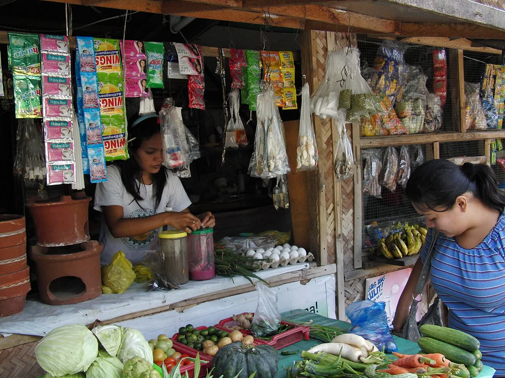

Utang
The listahan: credit built on trust between neighbors.Ang listahan: pautang na nakasandal sa tiwala ng magkakapitbahay.
The tindera writes every debt by hand in a notebook. Paying it back is as much about keeping a relationship as it is about money.Isinusulat ng tindera ang bawat utang sa isang kuwaderno. Ang pagbabayad ay hindi lang tungkol sa pera kundi pati sa pag-iingat ng samahan.
Ano’ng sasagutin ng kwentong ito
- How does the tindera decide who can have utang?Paano nagpapasya ang tindera kung sino ang puwedeng umutang?
- What does a real listahan page look like?Ano ang hitsura ng totoong pahina ng listahan?
- What happens to the relationship when a debt goes unpaid?Ano ang nangyayari sa samahan kapag hindi nabayaran ang utang?
Behind the counter there is often a notebook: the listahan. In it, in the tindera’s handwriting, are names, items and amounts. “Pa-utang po muna” means “may I take this now and pay later?”, and the listahan is where the answer is kept.Sa likod ng counter, madalas may kuwaderno: ang listahan. Nakasulat dito, sa sulat-kamay ng tindera, ang mga pangalan, binili at halaga. Ang “Pa-utang po muna” ay nangangahulugang “puwede ko po bang kunin ito ngayon at bayaran mamaya?”, at sa listahan nakatala ang sagot.
There is usually no contract and no paperwork. Credit rests on something else: the tindera knows her neighbors. She knows who is a suki, a regular customer, whose pay comes at the end of the week or month, and whose family is going through a hard time. That knowledge decides who can have utang and how much.Kadalasan ay walang kontrata at walang papeles. Iba ang sinasandalan ng pautang: kilala ng tindera ang mga kapitbahay niya. Alam niya kung sino ang suki, ang regular na mamimili, kung kaninong sahod ay dumarating sa katapusan ng linggo o buwan, at kung aling pamilya ang dumaraan sa hirap. Ang kaalamang iyon ang nagpapasya kung sino ang puwedeng umutang at magkano.
When someone pays, the line in the notebook is settled, and the store and the household go on as before. Paying back is about more than money. It keeps a relationship in good standing, and the next “pa-utang” depends on it.Kapag may nagbayad, natatapos ang linya sa kuwaderno, at tuloy ang buhay ng tindahan at ng tahanan. Higit pa sa pera ang pagbabayad. Pinananatili nitong maayos ang samahan, at dito nakasalalay ang susunod na “pa-utang.”
That is why a sign like “Bawal ang utang, bukas pwede” is so funny. “No credit today, tomorrow is fine.” Everyone reading it knows that tomorrow always comes with the same sign.Kaya nakakatawa ang karatulang tulad ng “Bawal ang utang, bukas pwede.” Alam ng lahat ng nakakabasa na pagdating ng bukas, ganoon pa rin ang nakasulat sa karatula.
Trust also carries weight, and the tindera takes the risk herself. In a field study of five sari-sari stores published in 1975, Simeon Silverio found stores that kept credit in a notebook, an owner who cut back on credit because unpaid accounts tied up the cash she needed to keep the store running, and a paid debt that stayed on the list by mistake and had to be argued over. A later study of stores in Catanduanes also lists unrecoverable credit among owners’ problems. Utang holds the neighborhood together, and it can also leave both sides uncomfortable.May bigat din ang tiwala, at ang tindera mismo ang sumasalo sa panganib. Sa isang field study ng limang sari-sari store na inilathala noong 1975, nakita ni Simeon Silverio ang mga tindahang nagtatala ng pautang sa kuwaderno, isang may-ari na nagbawas ng pautang dahil naiipit sa mga hindi nabayarang utang ang perang kailangan niya para tumakbo ang tindahan, at isang bayad nang utang na naiwan pa sa listahan nang hindi sinasadya at kinailangang pagtalunan. Nakalista rin sa isang mas bagong pag-aaral ng mga tindahan sa Catanduanes ang mga utang na hindi na mababawi bilang isa sa mga problema ng mga may-ari. Pinagbubuklod ng utang ang kapitbahayan, at puwede rin itong mag-iwan ng pagkailang sa magkabilang panig.

“Ay, nabasa mo na ’yung utang?”
Pinagkunan
Silverio, S. G., Jr. (1975; reprinted 1982). The neighborhood sari-sari store. In The Philippine Poor I: Two Monographs. Institute of Philippine Culture, Ateneo de Manila University.
Custodio, L. P. (2017). Qualitative case study of micro-retail (“sari-sari”) stores in Catanduanes island, Luzon, Philippines. Asia Pacific Journal of Island Sustainability, 29(2).
Pahina 2 / 5